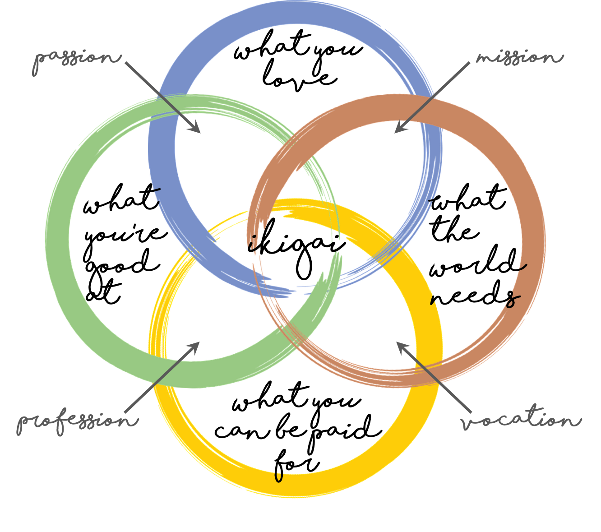

The Oxford English Dictionary defines ikigai as "a motivating force; something or someone that gives a person a sense of purpose or a reason for living". More generally it may refer to something that brings pleasure or fulfilment. The term compounds two Japanese words: iki (meaning 'life; alive') and kai (meaning '(an) effect; (a) result; (a) fruit; (a) worth; (a) use; (a) benefit; (no, little) avail') (sequentially voiced as gai), to arrive at 'a reason for living [being alive]; a meaning for [to] life; what [something that] makes life worth living; a raison d'être'.

OverviewIkigai can describe having a sense of purpose in life, as well as being motivated.According to a study by Michiko Kumano, feeling ikigai as described in Japanese usually means the feeling of accomplishment and fulfillment that follows when people pursue their passions. Activities that generate the feeling of ikigai are not forced on an individual; they are perceived as being spontaneous and undertaken willingly, and thus are personal and depend on a person's inner self. According to psychologist Katsuya Inoue, ikigai is a concept consisting of two aspects: "sources or objects that bring value or meaning to life" and "a feeling that one's life has value or meaning because of the existence of its source or object". Inoue classifies ikigai into three directions - social ikigai, non-social ikigai, and anti-social ikigai - from a social perspective. Social ikigai refers to ikigai that are accepted by society through volunteer activities and circle activities. An asocial ikigai is an ikigai that is not directly related to society, such as faith or self-discipline. Anti-social ikigai refers to ikigai, which is the basic motivation for living through dark emotions, such as the desire to hate someone or something or to continue having a desire for revenge. National Geographic reporter Dan Buettner suggested ikigai may be one of the reasons for the longevity of the people of Okinawa. According to Buettner, Okinawans have less desire to retire, as people continue to do their favourite job as long as they remain healthy. "Moai", the close-knit friend group, is considered an important reason for the people of Okinawa to live long. In 2016, a book based on the concept, entitled 'Ikigai: The Japanese Secret to a Long and Happy Life', was published by Penguin Books, written by Héctor García and Francesc Miralles.
Early popularisation
Although the concept of ikigai has long existed in Japanese culture, it was first popularised by Japanese psychiatrist and academic Mieko Kamiya in her 1966 book "On the Meaning of Life".The book has not yet been translated into English.
Developed and designed by : Vibhor Gupta
Contact me, I am always open for suggestions: